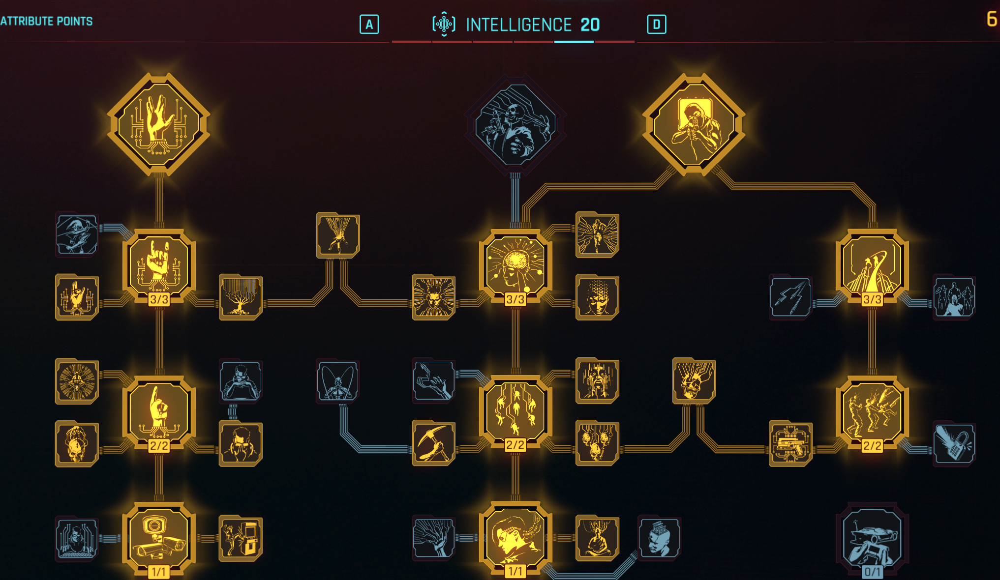
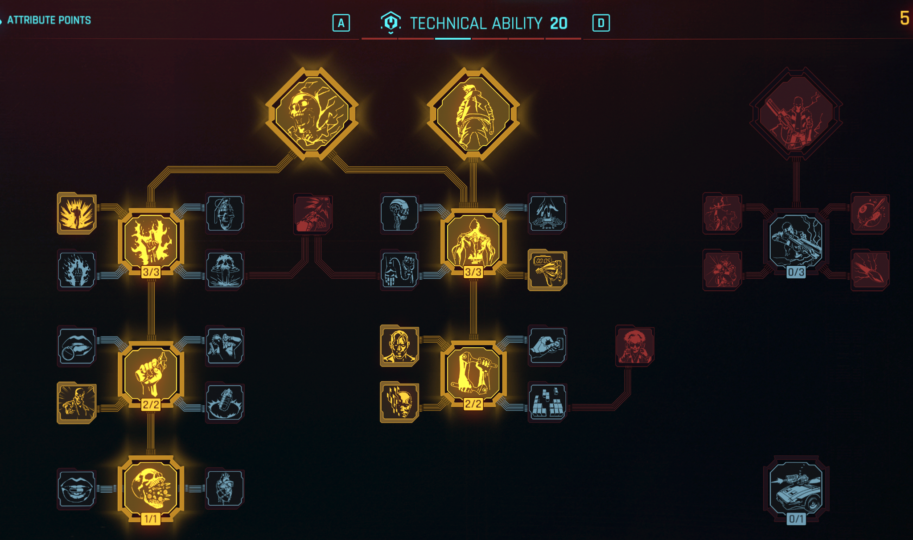
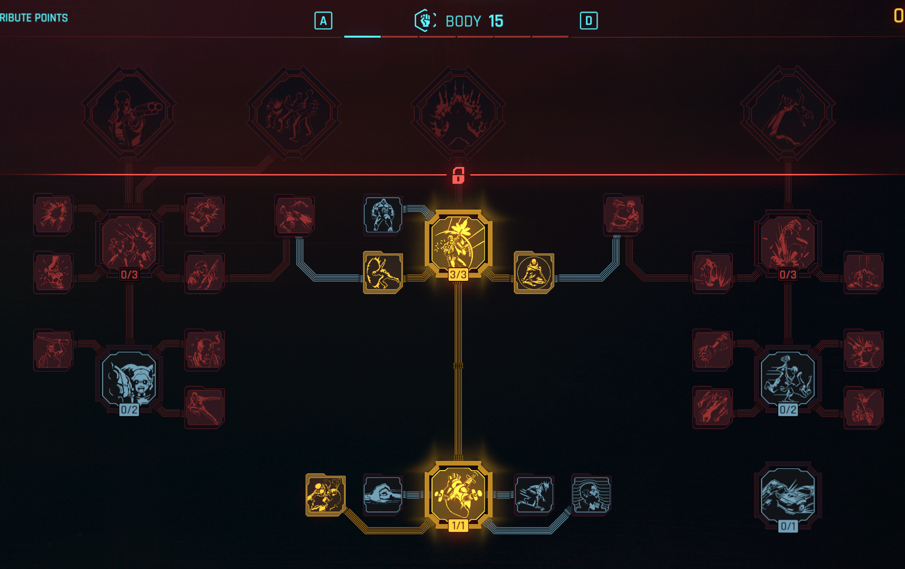
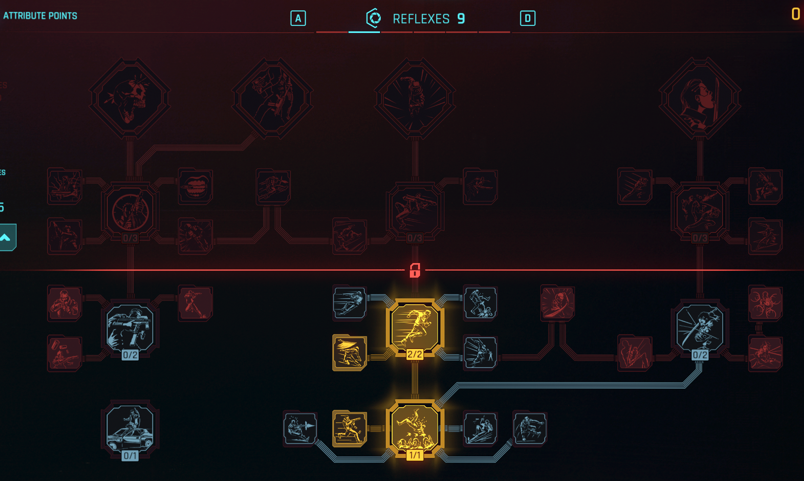
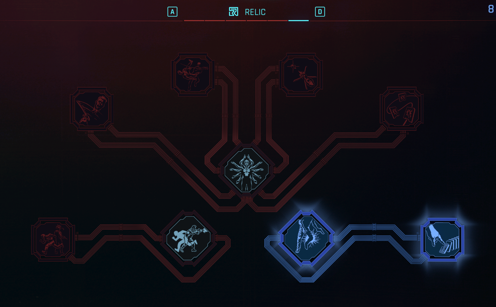

Visão geral da build
O Netrunner é a build de hacker puro: você mata, cega, queima e explode inimigos sem nem sacar a arma, usando hacks rápidos (quickhacks) alimentados por RAM. Desde o update 2.0, a mecânica central é a fila de quickhacks: você empilha vários hacks no mesmo alvo e eles detonam em cadeia, com bônus de dano por combo.
O coração da build no late game é o Overclock, perk final de Inteligência que permite gastar vida no lugar de RAM. Com os perks certos, você entra num loop quase infinito de hacks.
Pontos fortes
- Controle total do campo de batalha
- Stealth absoluto, ninguém te vê
- Dano absurdo em área
- Câmeras e torretas viram aliadas
- Trivializa chefes
Pontos fracos
- Início de jogo mais lento (pouca RAM)
- Frágil no corpo a corpo antes dos cyberwares defensivos
- Depende de visitas frequentes ao ripperdoc
Passado Corporativo
Boa notícia: o passado não afeta em nada os atributos ou a força da build. Pode seguir este guia 100%.
- A missão de prólogo: você começa na Arasaka Tower como agente da contrainteligência.
- Opções de diálogo exclusivas [Corporativo] ao longo do jogo, úteis para manipular executivos, agentes e situações corporativas.
- Tematicamente é o passado que mais combina com Netrunner: você entende o sistema por dentro.
Atributos
Criação de personagem (7 pontos, máx. 6 por atributo)
| Atributo | Valor inicial | Pontos gastos |
|---|---|---|
| Inteligência | 6 | +3 |
| Corpo | 6 | +3 |
| Habilidade Técnica | 4 | +1 |
| Reflexos | 3 | 0 |
| Frieza | 3 | 0 |
Distribuição final (nível 60, com Phantom Liberty)
| Atributo | Final | Função na build |
|---|---|---|
| Inteligência | 20 | Tudo: RAM, dano de hack, fila, Overclock. Prioridade absoluta. |
| Habilidade Técnica | 20 | Capacidade de cyberware, perk Edgerunner, bônus de chrome. |
| Corpo | 15 | Vida e regeneração. Essencial para sustentar o Overclock, que consome HP. |
| Reflexos | 9 | Dash e mobilidade básica. |
| Frieza | 3-10 | Opcional. Suba para 10 se quiser mais stealth (árvore Ninjutsu). |
Sem Phantom Liberty (nível 50): Inteligência 20, Habilidade Técnica 20, Corpo 12 a 15, Reflexos 9, Frieza 3. A lógica é a mesma, só sobram menos pontos.
Atenção: o reset de atributos só pode ser feito uma vez por save. Escolha a distribuição e siga até o fim. Perks podem ser resetados à vontade pagando eddies.
Roteiro nível a nível (ordem de ativação)
A ordem exata do que fazer conforme você sobe de nível. Regra que governa tudo: os vendedores liberam estoque novo por tier conforme o SEU nível. Tier 1 desde o início, Tier 2 no nível 10, Tier 3 no nível 20, Tier 4 no nível 30 e Tier 5 no nível 40. Vale para cyberware, quickhacks e armas.
-
Fundação
- Atributos: todo ponto em Inteligência, rumo a 9.
- Perks, nesta ordem: 1. Optimization, 2. Eye in the Sky, 3. Encryption, 4. Painkiller (Corpo 4, se começou com Corpo 6 já está liberado).
- Comprar: quickhacks Tier 1 e 2 no vendedor netrunner (Ping, Reboot Optics, Short Circuit, Overheat). Custam pouco.
- Hábito desde já: hackear todo Access Point (pontos vermelhos de rede) com Protocolo de Violação. É sua fonte de eddies e componentes de quickhack.
-
Tier 2 liberado
- Inteligência 9 alcançada. Perks, nesta ordem: 5. Hack Queue (libera a fila), 6. Embedded Exploit, 7. Recirculation, 8. ICEpick.
- Comprar no ripperdoc: cyberdeck Tier 2, Ex-Disk Tier 2, Biomonitor.
- Atributos: continuar Inteligência rumo a 15.
-
O salto: Overclock
- Inteligência 15. Perks, nesta ordem: 9. Overclock, 10. Blood Daemon, 11. Queue Acceleration 3/3, 12. Speculation e Subordination se sobrar ponto.
- A build muda de patamar aqui: Overclock + Blood Daemon = hackear de graça matando.
- Comprar: Synapse Burnout e Cyberware Malfunction no vendedor netrunner (tiers melhores conforme seu nível).
-
Tier 3 + Inteligência 20
- Perks: 13. Queue Mastery, 14. Smart Synergy. Seu dano de combo explode aqui.
- Comprar: cyberdeck Tier 3 (Rippler Mk.3 ou Netdriver), upgrades Tier 3 de Ex-Disk e Blood Pump.
- Atributos agora: Habilidade Técnica rumo a 9, depois 15.
- Perks de Técnica, nesta ordem: 15. Glutton for War, 16. All Things Cyber, 17. Health Freak 2/2, 18. Renaissance Punk.
- Arma: já dá pra buscar a Prototype: Shingen Mark V de graça (ver seção Armas).
-
Tier 4
- Comprar: Tetratronic Rippler Mk.4, quickhacks Tier 4 (Memory Wipe e Sonic Shock ganham os efeitos especiais neste tier).
- Técnica 15. Perks: 19. License to Chrome 3/3, 20. Extended Warranty.
- Corpo rumo a 15. Perks: 21. Adrenaline Rush 2/2, 22. Juggernaut.
- Cyberware defensivo: Countershell, Neofiber, Spring Joints, Reinforced Tendons.
-
Tier 5: a build completa
- Comprar: Tetratronic Rippler Mk.5 (qualquer ripperdoc), Ex-Disk Tier 5, quickhacks Tier 5.
- Em Dogtown (Phantom Liberty): COX-2 Cybersomatic Optimizer no ripperdoc local. Crítico garantido em quickhack. É o item que mais transforma a build.
- Técnica 20. Perk: 23. Edgerunner.
- Reflexos 9. Perks: 24. Slippery, 25. Muscle Memory, 26. Dash.
-
Polimento
- Upgrade de tudo para Tier 5+ e 5++ no ripperdoc (usa componentes de item).
- Quickhacks Tier 5 raros caem de Access Points em áreas de nível alto.
- Pontos restantes: Frieza 10 (stealth) ou Corpo (mais HP para Overclock).
- Relíquia (Phantom Liberty): Vulnerability Analytics e Machine Learning primeiro.
Pra sua fase atual (~18h, início do Ato 2, farmando nível e eddies): prioridade é Inteligência 15 pro Overclock. Gigs de fixer e Access Points pagam bem. NCPD Scanner Hustles (crimes azuis no mapa) são XP e grana rápidos. E o carro volta sozinho: missão "Human Nature", o Delamain te liga no início do Ato 2.
Perks por árvore
Screenshots reais da distribuição final (patch 2.x). Marque o que já ativou, o progresso fica salvo no seu navegador.
Inteligência (árvore principal)

// Checklist de ativação (em ordem de prioridade)
Complementos no caminho: System Overwhelm, Speculation, Acquisition Specialist, Precision Subroutines, Data Recycler, Feedback Loop, Counter-a-hack, Sublimation, Race Against Mind, Power Surge, Queue Hack_Root, Queue Prioritization, Target Lock Transfer.
Habilidade Técnica (cyberware)

Corpo (sobrevivência)

Reflexos (mobilidade)

Relíquia (só com Phantom Liberty)

Cyberware: o que comprar e onde
Onde comprar: qualquer ripperdoc. Desde o update 2.0, todos os ripperdocs do jogo base vendem o mesmo catálogo completo. Não existe mais item exclusivo por loja, exceto Dogtown (Phantom Liberty), que tem itens próprios como o COX-2. O estoque melhora com o SEU nível: Tier 2 no nível 10, Tier 3 no 20, Tier 4 no 30, Tier 5 no 40.
Regra de ouro: volte ao ripperdoc a cada ~10 níveis pra subir o tier de tudo. O upgrade usa componentes de item (desmonte loot cinza/verde que você não usa).
Sistema operacional (o coração da build)
| Cyberdeck | Onde obter | Quando usar |
|---|---|---|
| Tetratronic Rippler Mk.5 | Qualquer ripperdoc, nível 40 (Mk.4 no nível 30) | Recomendado. Maior dano de combo. Upload automático de Reboot Optics e Weapon Glitch ao ativar Overclock. |
| Netwatch Netdriver Mk.1 | Qualquer ripperdoc, nível alto | Alternativa para hacks em área via câmeras. |
| Militech Paraline | Qualquer ripperdoc | Se quiser focar em armas smart. |
Prioridade 1 (compre primeiro)
// Checklist de compra
Prioridade 2 (meio de jogo)
Prioridade 3 (final de jogo)
Quickhacks: o que carregar e onde obter
3 formas de obter quickhacks:
- Vendedores netrunner: abra o mapa, use Filtro: Personalizado, deixe só "Vendedor" marcado e procure os que dizem "Netrunner". O estoque sobe de tier com o seu nível.
- Access Points: hackeie os pontos de acesso (Protocolo de Violação) espalhados por Night City. Dão eddies, componentes de quickhack e às vezes specs raros. Em áreas de nível alto podem dropar quickhacks Tier 5.
- Crafting: na aba de criação do inventário, usando componentes de quickhack (que vêm dos Access Points e de desmontar hacks que você não usa).
// Checklist dos hacks essenciais (pegue o tier mais alto disponível)
Armas: quais pegar e onde
Com o perk Recirculation, cada kill com arma smart devolve RAM. Sinergia perfeita pra quando a barra zerar.
// Checklist de obtenção
Como jogar (rotações)
Início de jogo (níveis 1 a 20)
- Ping na primeira pessoa ou dispositivo da área para mapear todo mundo.
- Stealth: Reboot Optics + Short Circuit em alvos isolados.
- Combate: Cyberware Malfunction, depois Short Circuit.
- Use pistola e granada como apoio, a RAM ainda é curta.
Final de jogo (nível 30+): o loop infinito de Overclock
- Ative o Overclock.
- Suba Cyberware Malfunction (ativa o Embedded Exploit).
- Suba Synapse Burnout (kills estendem o Overclock).
- Encadeie Cyberware Malfunction nos próximos alvos. O Blood Daemon devolve o HP que o Overclock consome.
- Repita até a sala inteira apagar. Com Queue Mastery, o último hack da fila bate com dano multiplicado.
Dano máximo (elites/chefes)
Cyberware Malfunction, depois Synapse Burnout, depois Cyberware Malfunction de novo, e fecha com hack supremo (Detonate Grenade ou Suicide).
Stealth total
Memory Wipe (Tier 4+), depois Reboot Optics, depois Sonic Shock (Tier 5). Ninguém nunca soube que você esteve lá.
Área clássico
Contagion num grupo, depois Overheat no infectado central. Explosão em cadeia.
Dicas específicas de PS5
- Segure L1 para abrir o scanner e a roda de quickhacks. A ordem da fila segue a ordem em que você seleciona os hacks.
- Ative a legenda de dano nas opções para acompanhar os combos.
- O patch 2.31 trouxe melhorias para PS5 Pro e o AutoDrive aprimorado. Aproveite para farmar gigs enquanto o carro dirige.
- Visite o ripperdoc a cada 10 níveis para subir o tier dos cyberwares.
- Evite o perk Spillover se quiser controle fino da fila (ele espalha hacks sem você pedir).
Cola rápida (resumo de prioridades)
- Inteligência 20: Overclock + Queue Mastery
- Habilidade Técnica 20: Edgerunner
- Corpo 15: Analgésico + Adrenalina
- Cyberdeck Tetratronic Rippler Mk.5 (qualquer ripperdoc, nível 40)
- COX-2 (Dogtown) + Ex-Disk + Blood Pump
- Quickhacks: Cyberware Malfunction, Synapse Burnout, Short Circuit, Memory Wipe
- Arma smart com Recirculation para emergências
- Relíquia: Vulnerability Analytics + Machine Learning